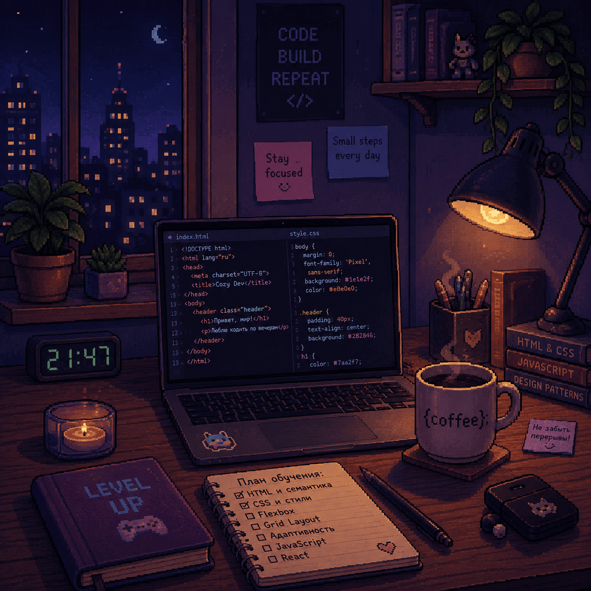

Фритрек и нулевой спринт: Подготовка к работе
<ready>

Это было самое начало пути. На этом этапе важно было проникнуться
основами и настроиться на учёбу. И, возможно, подумать, как новые
знания могут повлиять на ваше будущее.
На курс я пришёл не с пустыми руками. За плечами уже было
самостоятельное изучение HTML и CSS, поэтому первые уроки скорее
помогали разложить знания по полочкам. Тогда ещё казалось, что
впереди будет только повторение уже знакомого материала.